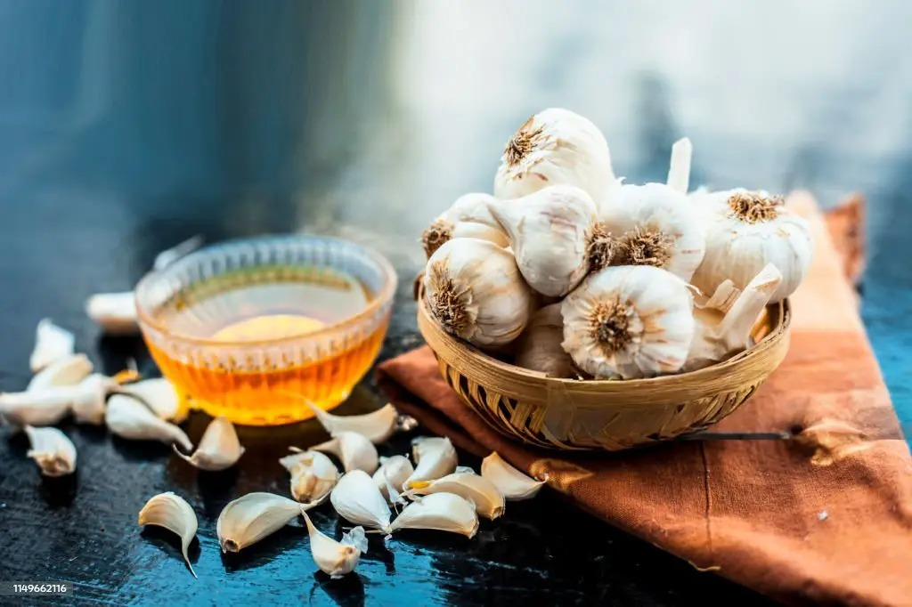

Garlic

Garlic (Allium sativum) is a bulbous plant used widely in cooking and known for its medicinal properties. It has been used for centuries to treat various health conditions and boost immunity.
Key Benefits of Garlic:
Boosts the immune system and fights infections.
Contains antioxidants that help reduce oxidative stress.
Improves heart health by lowering blood pressure and cholesterol.
Helps with detoxification and supports liver function.
Has anti-inflammatory properties that reduce swelling and pain.
Ingredients
1-2 garlic cloves (crushed)
1 cup hot water
1 teaspoon honey (optional, for sweetness)
1 teaspoon lemon juice (optional, for flavor)
Fresh ginger (optional, for added warmth)
Instructions
Peel and crush 1-2 garlic cloves.
Boil 1 cup of water in a kettle or saucepan.
Once the water boils, add the crushed garlic to the water.
Let the garlic steep in the water for about 5 minutes.
Optional: Add fresh ginger for extra warmth and flavor.
Strain the tea into a mug to remove the garlic and ginger pieces.
Optional: Add honey and lemon juice for sweetness and flavor.
Stir and enjoy your health-boosting garlic tea!
← Back to Remedies